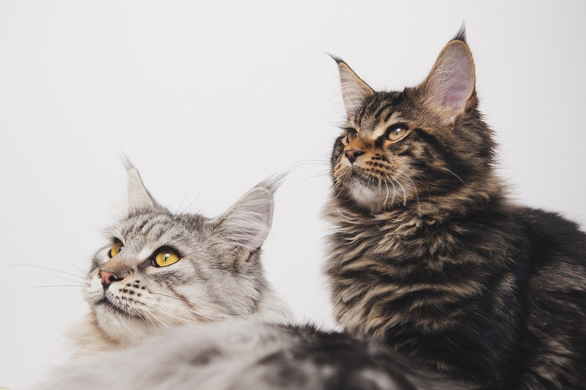

"Wieviele Beine hat eine Spinne?"
`Spinnen haben immer acht Beine und zwei Körperglieder, Insekten hingegen haben immer sechs Beine und drei Körperglieder.`
"Zu welcher Tierart gehört die Rasse 'Maine Coon'?"
`Die Maine Coon ist die größte und schwerste Katzenrasse der Welt und liebt es draußen in der Natur zu sein. Sie wird auch als „Sanfter Riese“ bezeichnet. `
"Welcher der folgenden Vögel kann nicht fliegen?"
`Der Strauß kann zwar nicht fliegen, aber dafür kann er eine halbe Stunde lang mit 50 Kilometern pro Stunde laufen. So schnell dürfen bei uns teilweise die Autos in den Städten fahren! Während kürzerer Zeit schafft er sogar 70 Stundenkilometer.`

"Welches Tier ist ein Beuteltier?"
`Koalas sind nachtaktive Beuteltiere, die in Australien in Eukalyptusbäumen leben und nur Eukalyptus-Blätter und -Rinde frisst. Der Koala ist eng verwandt mit den Kängurus, sie sind beide die wichtigsten Symbole Australiens.`
"Eine Biene ist ein ...?"
`Bienen gehören zu den Insekten und haben sechs Beine, vier Flügel und einen Panzer.`

"Ein Tausendfüßler hat durchschnittlich etwa wieviele Füße?"
`Ca. 400. Je nach Art besitzen sie zwischen acht und maximal 340 Beinpaare, also insgesamt höchstens 680 Beine.`

"Was ist eine "Schwarze Witwe"?"
`Die schwarze Witwe ist eine kleine Spinne. Ihr Durchmesser (mit Beinen gemessen) beträgt etwa 4 cm, die Körperlänge nur 1 cm.`
"Wie schlafen Giraffen?"
`Giraffen schlafen immer nur ein paar Minuten am Stück, insgesamt nur wenige Stunden am Tag - im Stehen.`
"Welcher Vogel baut kein eigenes Nest?"
`Der Kuckuck baut kein eigenes Nest, sondern legt seine Eier in fremde Nester. Sein Junges schlüpft früher als die der anderen Vögel und wirft dann die «Konkurrenz» aus dem Nest.`
.jpg)
"Welche Art von Augen besitzen Insekten?"
`Insekten haben Facettenaugen. Sie sind aus hunderten Einzelaugen zusammengesetzt. Aus all diesen Einzelbildern wird im Gehirn das Gesamtbild gebildet.`

"Welches ist das größte aktuell lebende Säugetier?"
`Der Blauwal ist das grösste Säugetier. Er kann bis zu 31 Meter lang werden und ist mehr als 100 Tonnen schwer.`

"Was ist eine Meerkatze?"
`Eine Meerkatze ist eine Affenart, die in verschiedenen Regionen Afrikas lebt.`